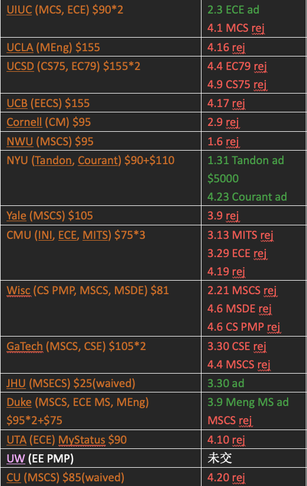

必死に ただ閃雲に空に手を伸ばして
拼命地，只是向着闪光的云空伸出手去
本系列为个人美国留学生活记录，分为行前篇、校园篇和旅行篇。
标题《太空人》取自新海诚电影《秒速五厘米》人生三部曲第二篇章 コスモナウト，源自俄语 Cosmonaut（宇航员），讲述成长后、毕业前这个阶段的，青春独有的迷茫、期许和无奈。
让我们从 2023 年夏说起。
第一段实习
2023 年，在大家都为了各个保研夏令营天南海北奔走的夏天，随着我在杭州阿里总部食堂里远程遥控我的同学帮我签了放弃保研承诺书，我知道自己已经没有回头路了。要等到十月才开始出国申请，次年四月才能知道结果，这意味着无论申请结果如何，我都必须全盘接受并押上家里七位数资产，去追逐自己这个虚无缥缈的太空人的梦。
简单讲一下我的本科四年，总体来看是非常轻松悠闲的四年。由于高中的竞赛经历，大一上选择进校队打 ACM，不到一学期因对竞赛无感、且与教练不合退役；大一下进组做科研，因为完全没有人指导，浑浑噩噩做了两年，几乎没有成果，认定自己不是这块料，因而决定从此不碰科研；除此之外零零散散参加了一些 CTF 竞赛（因为队友网线坏了用了我的而睡了一整场的觉）、混了些社团、办了些编程比赛。长期摆烂导致 GPA 比较难看（靠着刷分勉强刷上 3.8，最后 WES 认证没上 3.9），同时了解到保研大部分情况下最后的去向都是由导师和实验室安排好的，而我极其不适合在导师要求下学习，也希望能给自己将来的研究领域更大的选择权。另一方面，我是疫情三年完整的亲历者（长春是当时全国最严重的区域之一），其间种种也给了我三观不小的震撼。总而言之，由于各个方面的因素，在大三下我最终决定赴美留学。
具体是怎么决定下来的，我一直没有印象。可能是想着想着，某一天就不再考虑保研了。北美硕士申请无非看三个因素：标化（GPA、语言成绩），经历（论文、实习），文书（SoP、CV、推荐信）。语言方面我用两个暑假分别把 Toefl、GRE 考上门槛线（现在来看托福完全应该再多考几次，虽然当时考了一次就完全不想碰了也没办法）。GPA 上我完全不想努力，也没有花什么功夫；文书之类的基本上就是中文写好一份模板，把其中几个关键地方改成目标学校的特色，翻译成英文，再找个软件润色一下就结束了。
最后还能努力的空间只剩实习，于是我把自己听说过的互联网公司列了张表，开始挨个投递。当时并不了解什么日常、暑期实习，更不了解不同岗位的区别和要求，几乎是闭着眼睛乱投。大部分公司都有投递上限（那是正好是阿里拆分前两个月，还是非独立招聘的，整个集团只能投三个志愿），对于没有上限的比如字节，我花了一天时间把所有开放的实习岗位全投了一遍（88 个岗位），最后一个面试也没拿到。
运气非常好，唯一拿到的面试就是阿里淘天集团的 C++ 开发岗，意外地很顺利地三轮面试都通过了。工作是为淘宝的 AR/VR 3D 引擎写插件，技术栈非常多样，是个很有挑战性也很有趣的项目。后来进去后才知道，其实我当时排序第三，只有一个 HC，第一名把阿里鸽了，第二名组里小老板非常看好，但大老板一票否决了，最后才很幸运地轮到了我。可惜让老板们失望了，整个实习期间我几乎全部都在背 GRE 单词、学 Modern C++ 和 C#，加上对组里业务和技术栈完全不熟，最后几乎没有多少产出。老板说，产出完全不够留用，不想转正的话就走人，于是我只干了两个月就被迫走人了。
话说回来，这两个月过得还是非常精彩的，头一次进到一线城市的顶级大厂，头一次对计算机这个行业有了一个比较全面的认知，也是头一次了解到业界真实的样貌，眼界大开。只不过当时我不知道，就像《中国太阳》里水娃头一回进京城一样，之后有的是眼界大开的时刻，这才刚刚开始。


第二段实习
时间来到 23 年底，此时我已完成所有学校的申请，大四也没有别的事情，毕业论文我直接用之前失败的论文作品稍作修改，总共只花了两天。于是，虽然对申请已无作用，我还是决定用大四的时间再进行一段实习。
这一次，我的目标更明确些，不再关注国内互联网大厂，而是转而关注一些美国公司。当时正值寒假，几乎没有公司开放，我破罐子破摔地在牛客上找到一家叫英伟达的公司正在招 25 届的实习生。23 年底正是 LLM 的爆发期，NVIDIA 毫无疑问是这一波红利的受益者。因为经常看科技新闻的缘故，我对它的印象也从一家游戏芯片公司变成了一家 AI 芯片公司。我完全没报希望地给数月没上线的猎头留了言，问 24 届本科生是否能做一段时间日常实习。完全没想到的是，这一无心之举完全改变了我今后的人生。经过三轮不痛不痒的面试（问的几乎都是游戏显卡的问题，我从来不玩主机游戏，但凭着平时看科技新闻的见识竟然基本都应付了下来），和多次邮件催促，我竟然拿到了这次不可思议的实习的机会。
现在回头看，24 年春在上海张江的这三个月的实习经历，可以说是几乎毫无收获。岗位是最水的测试开发（JD 并没有写，我也没在意），每天的工作就是将实验室里的各种 GPU 插到测试机上，用现成的脚本测试各种视频软件、游戏、AI 应用的显卡性能。脚本挂了的时候就手动测试，或者修一修代码的 bug，调一调 OCR 等插件的参数。大部分时间就是在内部平台的 GUI 上部署 task，然后监控每台机子，再不然就是组装测试机、修电脑、重装显卡驱动等等杂活。
但是，实习之外对我的影响就太大了。首先是上海这座城市，虽然我以前来过很多次，但这是第一次我单独从一个打工人而不是一个单纯的游客的世界去感受它。我感受到它的繁华、多元和激情，也被它所震撼。在这里定居成了年少的我心中的第一个真实的梦想，虽然它是那么的遥不可及。这三个月，我几乎玩遍了上海的所有大小景点，感受着它的每一次呼吸，也第一次如此想清楚自己究竟想要什么，为了什么而前进。
另一方面，我在公司楼下一条人工河的对面租了个单间，不行上班只需 5 分钟。一个合租人也是 NV 的正式员工，从华为跳槽的，能力非常强。有一天晚上我门敞开着，他便到我的房间来闲聊几句。发现我们都看日本动漫作品、都打过计算机竞赛，便有了一些共同话题。然后我抓住机会问了他的工作，他便向我介绍了国内负责的 NV 高性能计算库和编译器部分。那个晚上总共聊了不到一个小时，我也完全没意识到这次对话有什么价值，但它将在一年后彻底改变我的人生轨迹。
题外话，在我入职前一个月的 NV 年会上黄仁勋来上海给所有员工都拍了合照、签了 to 签，当时老板邀请我，但我因为不在上海，且以为只是普通的饭局，于是痛失这个与老黄零距离接触的机会，懊悔至今 :)


行前准备
随着第二段实习结束，我的申请季也宣告结束。总结下来，我的申请策略总体没有什么问题，总共是拿了 6 个 offer。根据专排、总排、OpenCS 评级等指标最后综合选择了 Duke MS ECE（小插曲：由于漏看了邮件，起初我一直不知道自己拿了 Duke MS ECE 的 offer，直到决定回复 Duke ECE MEng 的时候才在 Portal 上看到 MS ECE 也录取了）。

整个申请过程不可谓不繁琐，需要找到每个院校项目的官方网站并仔细阅读，了解院系的偏好、主要的教授与他们研究的方向。每个学院都要专门准备一份 SoP，很多像 CMU 这种学校还需要专门为它设置的繁多问答题分别写回复，还有的项目需要录一个 video interview 甚至需要远程面试。二十多个项目全部申下来工作量巨大，更不用提语言考试（GRE 第一次考试没上门槛线）、成绩认证的各种麻烦，以及为了防止敏感行业签证问题而额外做的各类书面工作。为了省钱和锻炼克服对英文网页的恐惧，我坚持 DIY 而不找中介，只是打电话给几个中介咨询了一下选项方案。事实证明，中介给的目标院校档次会明显虚高，现在 AI 工具的成熟也让中介的定位愈发尴尬，唯一所谓的优势“信息差”也被 OpenCS 和一亩三分地等网站所替代。站在现在这个时间点，我不建议任何人找中介。
我的文书策略是，将自己包装成对人工智能和人机交互相关的研究者。一方面是因为我之前的科研项目都与此有关，另一方面是这些方向适合引导至美国最爱的政治正确、人文关怀、理想抱负等等方面的表达（当时正值民主党执政，且院校内意识形态明显比平均水平更左）。
签证最后还是毫无悬念地 check 了，我护照是在上海办的，签证在沈阳，抽到了一个态度一般的黑女，见面的第一眼我就猜到会先 refuse 了，好在后续让我邮件提交了一系列本科导师材料和证明，又等了一个多月成功下签，虽然只有一年（正常学签是五年）。
万事俱备，剩下的就是抓紧享受国内的大学生活了。大四这一年，我玩了杭州、上海、苏州、无锡、合肥、南京、哈尔滨、延吉，毕业旅行去的是大连和北京。到北卡罗莱纳州最便宜的机票是从厦门出发，临走前，全家人为我送行，顺便把厦门玩了一圈。从学校到家再到厦门，跨越了黄河，跨越了长江，该跨越太平洋了。
好。那么，走罢！
去美国。